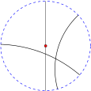
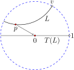
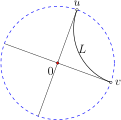
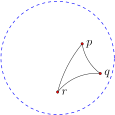
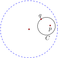

The Euclidean transformation group, \(\cal E\text{,}\) consisting of all (Euclidean) rotations and translations, is generated by reflections about Euclidean lines. Similarly, the transformations in \({\cal H}\) are generated by hyperbolic reflections, which are inversions about clines that intersect the unit circle at right angles. This suggests that these clines ought to be the lines of hyperbolic geometry.
Definition5.2.1
A hyperbolic line in \((\mathbb{D},{\cal H})\) is the portion of a cline inside \(\mathbb{D}\) that is orthogonal to the circle at infinity \(\mathbb{S}^1_\infty\text{.}\) A point on \(\mathbb{S}^1_\infty\) is called an ideal point. Two hyperbolic lines are parallel if they share one ideal point.

Figure5.2.2 A few hyperbolic lines in the Poincaré disk model.
Theorem5.2.3
There exists a unique hyperbolic line through any two distinct points in the hyperbolic plane.
Let \(p\) and \(q\) be arbitrary points in \(\mathbb{D}\text{.}\) Construct the point \(p^*\) symmetric to \(p\) with respect to the unit circle, \(\mathbb{S}^1_\infty\text{.}\) Then there exists a cline through \(p, q\) and \(p^*\text{,}\) and this cline will be orthogonal to \(\mathbb{S}^1_\infty\text{,}\) so it gives a hyperbolic line through \(p\) and \(q\text{.}\) Since there is just one cline through \(p, q\) and \(p^*\text{,}\) this hyperbolic line is unique.
Which hyperbolic lines happen to be portions of Euclidean lines (instead of Euclidean circles)? A Euclidean line intersects a circle at right angles if and only if it goes through the center of the circle. Thus, the only hyperbolic lines that also happen to be Euclidean lines are those that go through the origin.
One may also use a symmetric points argument to arrive at this last fact. Any Euclidean line goes through \(\infty\text{.}\) To be a hyperbolic line (i.e., to be orthogonal to \(\mathbb{S}^1_\infty\)), the line must also pass through the point symmetric to \(\infty\) with respect to the unit circle. This point is 0. Thus, to be a hyperbolic line in \((\mathbb{D},{\cal H})\text{,}\) a Euclidean line must go through the origin.
Theorem5.2.4
Any two hyperbolic lines are congruent in hyperbolic geometry.
We first show that any given hyperbolic line \(L\) is congruent to the hyperbolic line on the real axis. Suppose \(p\) is a point on \(L\text{,}\) and \(v\) is one of its ideal points. By Lemma 5.1.5 there is a transformation \(T\) in \({\cal H}\) that maps \(p\) to 0, \(v\) to 1, and \(p^*\) to \(\infty\text{.}\) Thus \(T(L)\) is the portion of the real axis inside \(\mathbb{D}\text{,}\) and \(L\) is congruent to the hyperbolic line on the real axis. Since any hyperbolic line is congruent to the hyperbolic line on the real axis, the group nature of \(\cal H\) ensures that any two hyperbolic lines are congruent.

Figure5.2.5 Any hyperbolic line is congruent to the hyperbolic line on the real axis.
Theorem5.2.6
Given a point \(z_0\) and a hyperbolic line \(L\) not through \(z_0\text{,}\) there exist two distinct hyperbolic lines through \(z_0\) that are parallel to \(L\text{.}\)
Consider the case where \(z_0\) is at the origin. The line \(L\) has two ideal points, call them \(u\) and \(v\text{,}\) as in Figure 5.2.7. Moreover, since \(L\) does not go through the origin, Euclidean segment \(uv\) is not a diameter of the unit circle. Construct one Euclidean line through 0 and \(u\text{,}\) and a second Euclidean line through 0 and \(v\text{.}\) (These lines will be distinct because \(uv\) is not a diameter of the unit circle.) Each of these lines is a hyperbolic line through 0, and each shares exactly one ideal point with \(L\text{.}\) Thus, each is parallel to \(L\text{.}\) The fact that the result holds for general \(z_0\) is left as an exercise.

Figure5.2.7 Through a point not on a given hyperbolic line \(L\) there exist two hyperbolic lines parallel to \(L\text{.}\)
Figure 5.2.7 illustrates an unusual feature of parallel lines in hyperbolic geometry: there is no notion of transitivity. In Euclidean geometry we know that if line \(L\) is parallel to line \(M\text{,}\) and line \(M\) is parallel to line \(N\text{,}\) then line \(L\) is parallel to line \(N\text{.}\) This is not the case in hyperbolic geometry.
Example5.2.8Hyperbolic triangles
Three points in the hyperbolic plane \(\mathbb{D}\) that are not all on a single hyperbolic line determine a hyperbolic triangle. The hyperbolic triangle $\Delta pqr$ is pictured below. The sides of the triangle are portions of hyperbolic lines.
Are all hyperbolic triangles congruent? No. Since transformations in \(\cal H\) are Möbius transformations they preserve angles, so triangles with different angles are not congruent.

The next section develops a distance function for the hyperbolic plane. As in Euclidean geometry, we want to be able to compute the distance between two points, the length of a path, the area of a region, and so on. Moreover, the distance function should be an invariant; the distance between points should not change under a transformation in \({\cal H}\text{.}\) With this in mind, consider again a hyperbolic rotation about a point \(p\text{,}\) as in Figure 5.1.6(a). It fixes the point \(p\) and moves points around type II clines of \(p\) and \(p^*\text{.}\) If the distance between points is unchanged under transformations in \({\cal H}\text{,}\) then all points on a given type II cline of \(p\) and \(p^*\) will be the same distance away from \(p\text{.}\) This leads us to define a hyperbolic circle as follows.
Definition5.2.9
Suppose \(p\) is any point in \(\mathbb{D}\text{,}\) and \(p^*\) is the point symmetric to \(p\) with respect to the unit circle. A hyperbolic circle centered at \(\boldsymbol{p}\) is a Euclidean circle \(C\) inside \(\mathbb{D}\) that is a type II circle of \(p\) and \(p^*\text{.}\)
Figure 5.2.10 shows a typical hyperbolic circle. This circle is centered at point \(p\) and contains point \(q\text{.}\) Construction of such a circle may be achieved with compass and ruler as in Exercise 5.2.5.

Figure5.2.10 A hyperbolic circle centered at \(p\) through \(q\text{.}\)
Theorem5.2.11
Given any points \(p\) and \(q\) in \(\mathbb{D}\text{,}\) there exists a hyperbolic circle centered at \(p\) through \(q\text{.}\)
Given \(p, q \in \mathbb{D}\text{,}\) construct \(p^*\text{,}\) the point symmetric to \(p\) with respect to \(\mathbb{S}^1_\infty\text{.}\) Then by Exercise 3.5.15 there exists a type II cline of \(p\) and \(p^*\) that goes through \(q\text{.}\) This type II cline lives within \(\mathbb{D}\) because \(\mathbb{S}^1_\infty\) is also a type II cline of \(p\) and \(p^*\text{,}\) and distinct type II clines cannot intersect. This type II cline is the hyperbolic circle centered at \(p\) through \(q\text{.}\)
Suppose \(C\) is a hyperbolic circle centered at \(z_0\) through point \(p\text{.}\) Show that there exists a hyperbolic line \(L\) tangent to \(C\) at \(p\text{,}\) and that \(L\) is perpendicular to hyperbolic segment \(z_0p\text{.}\)
2
Constructing a hyperbolic line through two given points.
a. Given a point \(p\) in \(\mathbb{D}\text{,}\) construct the point \(p^*\) symmetric to \(p\) with respect to the unit circle (see Figure 3.2.18).
b. Suppose \(q\) is a second point in \(\mathbb{D}\text{.}\) Construct the cline through \(p\text{,}\) \(q\text{,}\) and \(p^*\text{.}\) Call this cline \(C\text{.}\) Explain why \(C\) intersects the unit circle at right angles.
c. Consider the portion of cline \(C\) you constructed in part (b) that lies in \(\mathbb{D}\text{.}\) This is the unique hyperbolic line through \(p\) and \(q\text{.}\) Mark the ideal points of this hyperbolic line.
3
Can two distinct hyperbolic lines be tangent at some point in \(\mathbb{D}\text{?}\) Explain.
4
Suppose \(L\) is a hyperbolic line that is part of a circle \(C\text{.}\) Can the origin of the complex plane be in the interior of \(C\text{?}\) Explain.
5
Constructing a hyperbolic circle centered at a point \(p\) through a point \(q\).
Suppose \(p\) and \(q\) are two points in \(\mathbb{D}\text{,}\) and that \(q\) is not on the line through \(p\) and \(p^*\) - the point symmetric to \(p\) with respect to the unit circle.
a. Find the center of the Euclidean circle through \(p\text{,}\) \(p^*\text{,}\) and \(q\text{.}\) Call the center point \(o\text{.}\)
b. Construct the segment \(oq\text{.}\)
c. Construct the perpendicular to \(oq\) at \(q\text{.}\) This perpendicular intersects the Euclidean line through \(p\) and \(p^*\text{.}\) Call the intersection point \(o^\prime\text{.}\)
d. Construct the Euclidean circle centered at \(o^\prime\) through \(q\text{.}\)
e. Prove that this circle is the hyperbolic circle through \(q\) centered at \(p\text{.}\)
6
Explain why Theorem 5.2.6 applies in the general case, when \(z_0\) is not at the origin.
7
Given a point and a hyperbolic line not passing through it, prove that there is a hyperbolic line through the point that is perpendicular to the given line. Is this perpendicular unique?